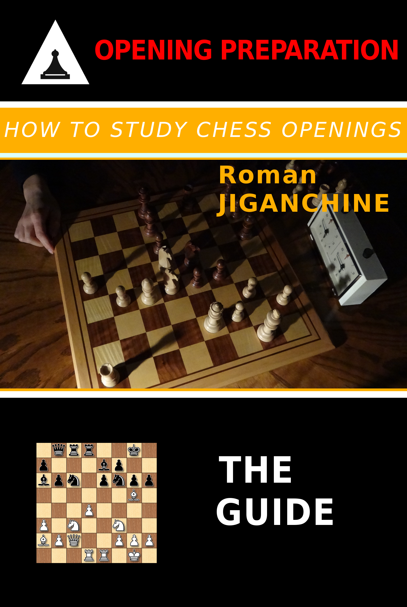

How to Study Chess Openings
Created Thursday 07 December 2017
Amazon | Kobo | Google Play | Paperback
There is an interesting paradox in the chess community - many coaches and teachers warn players of all levels against the excessive obsession with opening theory and yet the vast majority of chess materials in digital or printed form are dedicated to specific opening variations or positions. While everyone admits that memorizing variations will never guarantee success in over the board or online encounters, there is clearly a demand for products that help chess players of all levels to successfully navigate through the first stage of the game. At the same time, there is a lack of detailed discussion regarding how seasoned players (expert level and above) structure their work on chess openings, store their analysis, come up with new ideas, prepare for tournament games and so on. Rather than provide another set of variations, key positions and critical games in a specific opening area, this book is meant to fill this gap and help the reader to make sense from all the information that is out there and save as much time and energy as possible, while still building a bulletproof opening repertoire. The book is aimed at any chess player who wants to improve their opening play and is looking for some guidance in that area.
Despite the large proliferation of computer chess software, there is a lack of explanation for how to tie to it effectively to one's study of openings. In the most advanced book on the subject, 'Opening Preparation', published in 1990s, the renowned coach Mark Dvoretsky, while giving great coverage for other topics, described the system for storing opening analysis on paper cards, with a side note that this was outdated and software should be used instead and that this was a large topic deserving a separate discussion. Since then there was a deafening silence on the subject in chess books, at least partially inspiring this publication, which outlines the system for storing opening analysis that served the author well for almost a decade.
The goal of the book is to help the reader to increase their creativity in the opening phase of the game - both at home and during the games - whether you are a serious tournament player, or just play chess for fun at a club or on the Internet. Most of the plans and ideas are coming from Grandmaster games, with additional examples of preparation from the author's own master level games. Whether you enjoy opening preparation already, or it is your weak spot, I hope the book will give you some food for thought and practical suggestions applicable immediately upon reading the book. If rather than remember exact opening moves from the book examples, the reader is instead inspired to come up with their own ideas - the author's mission will be quite accomplished!
Good opening preparation is all about picking the right direction for opening research and investing time into fine-tuning the understanding of favourable positions that are most likely to occur in our games. The basic premise throughout the book is to base one's opening preparation on 3 E's:
Enjoyable - the positions that you analyze during opening preparation should appeal to your chess taste, and the process itself should feel pleasant and creative. See the section on 'Creativity' for more details.
Effective - ultimately it should bring good results during tournament games, and be targeted at the positions that are most likely to occur on the board. This is covered under sections on Cutting Opponent's Options, Transpositions, and so on. Our choice of opening variations is more likely to make our work effective than anything else.
Efficient - this is not as important as effectiveness, but we still don't want to waste time and analysis, so various computer tools are suggested to optimize the 'how' of opening analysis, save our work, and efficiently retrieve it.
While it has plenty of examples and annotated games, this book deals with opening preparation in general. For books on specific openings, the reader might want to explore other books in the "Opening Preparation" Series:
Spanish Opening - Strategy and Tactics also serves as a repertoire book for White
Exchange Slav - Strategy and Tactics covers the particular opening and pawn structure for both sides
Isolated Queen Pawn: Strategy and Tactics spans multiple openings, but focuses on a single common pawn structure

Contents:
- Introduction
- Building a Repertoire - Motivation and General Principles
2.2. Gaining Advantage on the Clock
2.3. Acceleration of Play - How Faster Time Controls Affect Preparation
- Building a Repertoire - How to Do This
3.2. How To Make a Tree in Digital format
3.2.1. Step 1 - Obtain and Format the Database with ECO list of Openings
3.2.2. Step 2 - Select and Tag Openings that Belong to your Repertoire
3.2.3. Step 3 - Add Custom Analysis in a Separate Database that Contains only Repertoire Openings
3.3. Example of a Specific Opening Preparation - Two Knights Defence for Black
3.4. Building Repertoire - Cutting out Opponent's Options
3.5. Reducing Material to Learn - Transpositions to the Rescue
- Creativity
4.2. Noticing Patterns - Seeing the Forest for the Trees
- Learning from the Grandmasters
5.2. Short approach against the Scandinavian
5.3. Pavasovic attacks with Isolated pawn
5.4. Nadezhda Kosintseva plays with Isolated Pawn to beat the French
5.5. Ilya Smirin's games Vs The French, Delayed Castling, attacking Pawn Chain, etc ...
5.6. Studying the Classics
5.7. How to Find New Chess Ideas
- Common Mistakes During Opening Preparation
6.2. The Impact of Computers on Opening Preparation
6.3. Overestimating Opponent's Preparation
- Opening Duels - Specific Opponent and Opening Preparation
7.2. Central Gambit - Move Order Tricks
7.3. Najdorf Sicilian - Avoiding Time Trouble
7.4. Queen's Gambit Accepted - Opening Advantage does not Guarantee Success
7.5. Queen's Gambit Accepted - Choosing a Pawn Structure
7.6. Repairing the Repertoire
7.7. Following the Middlegame plan
- Memorizing Openings
8.2. Memorizing Chess Openings
8.3. Why Less Is More When it Comes to Opening Repertoire
8.4. Anand on Studying Chess with Computers and Memory
- Summary - Checklists
9.2. Checklist for Maintaining Opening Repertoire in Digital Form
9.3. 10 Additional Reasons to Build an Opening Repertoire
- About the Author
- Symbols and Abbreviations Used in the Book
11.2. Move Evaluation